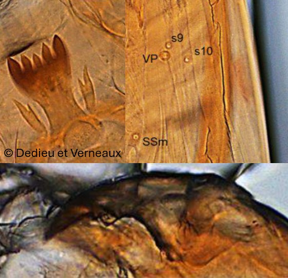
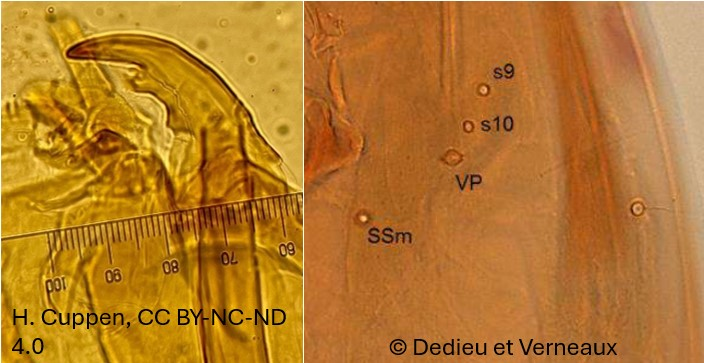

Sous famille des Tanypodinae
Mandibule avec une dent interne relativement développée, peigne de l'hypopharynx avec de nombreuses dents, corps sans soies


Mandibule bien développée.Ligula : Dents latérales internes sont légèrement plus courtes (ou de
même taille) que les dents latérales externes. Pseudoradula discrète
Mandibule large, en forme de « faucille » à dent interne forte et émoussée.
Pseudoradula grossière et striée Dent latérales interne sont nettement plus courte que les dents latérale externe
Les larves de Larsia sont proches de Zavrelimyia , Natarsia, Telopelopia . Zavrelimyia est distinguable grâce à ses petites griffes bifides du parapode postérieur L'antenne de Larsia est beaucoup plus longue : 3,5 x la longueur de la mandibule contre 2x chez Telopelopia, Chez Natarsia, le corps de la larve porte des soies.